Install the I.R.Choir vocal ensemble effect for compatible Mac audio workstations.
This package includes Audio Unit (AU) and VST3 formats for Apple Silicon and Intel.
Version 0.3.0 is an experimental DSP prototype. It requires incoming audio and does not include AI singer models or text-to-singing.
macOS 12 or later. Quit your DAW before continuing.